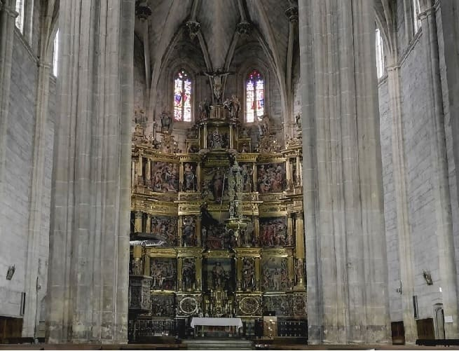

1. Travel through the North of Spain
1. Travel through the North of Spain
August 5 to 11, 2021
Day 7, the Romanesque of Palencia
August 11, 2021


26. Carrión de los Condes
26. Carrión de los Condes
I left a pretty good roadside hotel at the Los Chopos gas station. From there I will continue along the A-231 that leads from Palencia to León towards Carrión de los Condes. This town, together with Sahagún and Aguilar de Campoo, make up the most important towns in Palencia. In Carrión de los Condes and in Sahagún, The Ages of Man are also exhibited in 2021, which brings together the most important figures, carvings and relics of the main churches and religious buildings. Each year the province changes and this year it was in Palencia.
In Carrión de los Condes there are several places that are worth visiting the town. The town is named after the river that runs through it and over which a bridge was built in the Middle Ages.
At the entrance to it and outside what could have been the walled enclosure is the monastery of San Zoilo. Construction began in the 10th century by monks of the Cluny order. It is located in a passageway on the way to Santiago and became famous for dispensing bread and wine to pilgrims. From the 15th century it would gain more importance and the main cloister would be built. From the 18th century it would become a secondary school. It is currently a hotel of great importance.


The most important churches in the town are the church of Santiago and the church of Santa María del Camino, both Romanesque with doors carved with different figures.
The Church of Santiago dates from the 12th century and its façade is very interesting. It has a semicircular arch with an archivolt on its columns, topped by a frieze with high reliefs of the revelation of the apocalypse by John the Evangelist. Inside it is very simple since it is currently used as a museum. In it were the ages of Man exposed.


The other important church is the church of Santa María del Camino, built parallel to that of Santiago. It is much larger and on the cover it also has a curious relief of the adoration of the Magi. The columns have capitals with figures of people and fantastic animals. Inside it has a Baroque altarpiece but the plan is Romanesque.


The main square is large and is next to the church of Santiago. Another church to see is the church of Nuestra Señora de Belén. The best thing about this church is the altarpiece, much more valuable than that of the other two churches, in the 16th century Plateresque style with different images from the New Gospel. Nearby is a hermitage where the steps of Holy Week are kept. Other churches of less cultural importance are San Andrés and San Francisco. The town also has a monastery, that of Santa Clara.


That said, Carrión is a good example of religious art in the Romanesque style of Palencia.


27. Villalcazar de Sirga
27. Villalcazar de Sirga
We return along the road to the east to see different villages with Romanesque jewels. We head towards Fromista and before arriving we will enter
Villalcazar de Sirga and we will find the imposing
church of Santa María La Blanca. This church was very important in the Middle Ages, the burial place of Alfonso X el Sabio's brother and his wife. The entrance doorway and in general the entire temple stand out. Having seemed to me one of the best monuments in Palencia, next to the cathedral and the church of Tamara de Campos.


Once we have seen this church, we head towards
Fromista where we will find
the Romanesque church of San Martín de Tours, which gives its name to the Fromista style, a very simple style that comes from the Romanesque. In this church, the capitals and the sober interior style stand out.


Other Romanesque churches to see are
the church of San Pedro, in the Gothic style and open for religious use since the others are a museum, and
the church of Santa María del Castillo, which It has an audiovisual museum inside. You can also see the lock system of the Castilla canal, a natural area where there are paths for cycling and hiking.


29. Santoyo
29. Santoyo
After leaving Fromista, I visit
Santoyo where there is an important Palencia Romanesque church,
the church of San Juan Bautista. It is from the 12th century, like those of Carrión, but the cover is more from the 16th century in a plateresque style or, in my opinion, more of a flamboyant style, very ornate. It has very large dimensions and the Renaissance altarpiece stands out.


30. Tamara de Campos
30. Tamara de Campos
Next, I go to
Tamara de Campos where the church of San Hipolito el Real is located, respectively, recently restored and cleaned inside. This church is more modern than the previous ones, dating from the end of the 14th century and being Gothic in style. The altarpieces of these two churches are authentic jewels, and in San Hipolito there are also different figures carved inside on the walls. This church is more like a cathedral that could well be a collegiate church, and it has 3 naves. It has an interior stone decoration. The altarpiece is in the Baroque style and has some other altarpieces on its sides.


31. Palencia
31. Palencia
After seeing these two churches, I will travel to
Palencia. There I will eat in a restaurant with a fairly complete menu near the roundabout dedicated to the Iberian peasant. In Palencia, I will move parallel to the Carrión river to enter the historic center at the height of the Puente Mayor.

The first thing I visited was
the Cathedral of San Antolín, which impressed me a lot since it seemed to me to be one of the most beautiful cathedrals in Spain on the inside, however, on the outside it is quite austere, since it was built under a Visigothic temple and is mostly Romanesque in style. It is the third largest cathedral in Spain in terms of surface area and with its 130 meters in length, the one with the longest central nave. It is a construction of great proportions: 130 meters long, with a width of 50 meters in the transept, plus many others for the cloister and chapter house; the apse is close to 42 meters high.
It is a predominantly Gothic-style building, although it preserves previous elements, from the Visigothic and Romanesque times of the aforementioned temple, and Renaissance, Baroque and Neoclassical decorative elements. Construction began in the fourteenth century, being the only great Castilian cathedral begun in that century.
The exterior lacks a proper main façade and appears austere and massive, a situation that does not reflect the grandeur of its interior, where you can see more than twenty chapels of great artistic and historical interest and a multitude of works of art of all styles.
Although the construction of the Gothic cathedral lasted from the 14th to the 16th century, in reality what can be seen today has taken almost fourteen centuries to be erected, since the oldest part of the Crypt of San Antolín dates from the 7th century and there were important works and reforms in the 20th century. Once inside one is surprised, since it is mostly Gothic with a beautiful altarpiece, which reminds me a lot of the one in the cathedral of Toledo.


There are also quite a few important churches, such as
the church of San Miguel near the cathedral. The most characteristic of the building is its tower with large openwork windows and a battlement finish that gives it the appearance of a fortress, being one of the emblematic images of the city. It goes from the Romanesque to the Gothic style, being from the end of the 11th century when the Gothic was beginning. Very close is the bridge over the Carrión river and it was the entrance to the city very close to the old wall. Nearby is
the archaeological museum of Palencia on the Casa del Cordón, an old manor house.


Other churches
the church of Santa Clara, part of the convent, and the church of San Bernardo, much more modern with a Renaissance style.


Nearby are
the theater, the food market and the provincial government building.


We also find the Plaza Mayor and the town hall and on Calle Mayor some palaces, such as
the Colegio de Villadrando, a modernist building.


Lastly, one of the most characteristic monuments of Palencia is
the great Cristo del Otero, a sculpture of about 20 meters, one of the largest in the world that is located on a mountain on the outskirts of the city.


32. Sahagún
32. Sahagún
After leaving Palencia we will go to
Sahagún. The town of Sahagún, cradle of kings, saints and wise men, already enjoyed great activity in Roman times due to its excellent location in the heart of Via Trajana between Legio VII and Italia, a road that led to Astorga, Zaragoza and Tarragona.
Its birth took place in the shadow of a Medieval Monastery in honor of Saints Facundo and Primitivo (hence the name of La Villa Sanctus Facundus), more than nine centuries ago. In the 2nd and 3rd centuries the martyrdom of these saints took place, who died beheaded and thrown into the Cea River, on whose shore they were buried by groups of Christians. It was then that the cult of the two martyrs began and the construction in the place of their martyrdom, of the primitive Sanctuary before the 9th century, destroyed by a Muslim expedition in 883 and restored by the king and the abbot Alfonso, cradle of the birth of the Benedictine community when monks from Córdoba revitalize the Dommos Santos monastery.
Little by little, Sahagún became rich given its privileged location on the banks of the Cea River, where Tierra de Campos and the Páramo meet.
The most characteristic church is that of San Lorenzo. It dates from the 11th century and is in the Mudejar Romanesque style, with Gothic elements as well. The nave ends in a barrel vault and has a triple apse like the church of San Tirso, which are very similar.
Inside there are models of the city's churches.


The church of San Tirso from the 12th century is very similar to the church of San Lorenzo. Nearby is the church of La Peregrina. This last church is very large and was more of a Franciscan convent. The convent would be abandoned and today the church and part of the cloister are preserved. In this church was the first part of the ages of the Man of Sahagun being the second in the church of the Pergrina.


Another of the monumental attractions of the city is
the arch of San Benito which is right where the
Royal Monastery of San Benito used to be, today in ruins and of which remains are still found , one of the largest that existed in all of Spain. The monastery dates from the 10th century, being one of the first architectural complexes in the city.
In it, archaeological remains as important as the sarcophagus of Alfonso Ansurez, son of Pedro Ansurez, a nobleman of the time close to the kings, have been found. King Alfonso VI would also be buried in this monastery. Such an important king to whom Navarra and La Rioja owe part of all the privileges granted in many of their cities and towns. This sarcophagus, due to its singularity, would be sold to the Metropolitan Museum of New York and then it would return to Spain, to the Archaeological Museum of Madrid, since it was seen to be extremely important and would be repurchased. The monastery also had one of the richest monastic libraries and several of its books are in the National Library of Madrid.


Other buildings to visit are
the Church of San Juan and the
Trinidad Church, currently a hostel for pilgrims and where numerous events are held.


At the end I went to my town in El Bierzo where I would spend some very good days.
Church of Santiago and Santa María del Camino, 12th century.
26
Church of Santa María la Blanca, 12th century.
27
Church of San Martín de Tours, s.XI.
28
Church of San Juan Bautista, s.XII.
29
Church of San Hipólito el Real, s.XIV.
30
Cathedral of San Antolín, s.XIV.
31
Church of San Lorenzo and Church of San Tirso, s.XII.
32
Day 1, Guadalajara to Miranda de Ebro (CLICK to continue)
August 5, 2021

![[Valid RSS]](https://www.onepointsync.com/wp-content/uploads/2016/08/valid-rss-rogers.png "Validate my RSS feed")